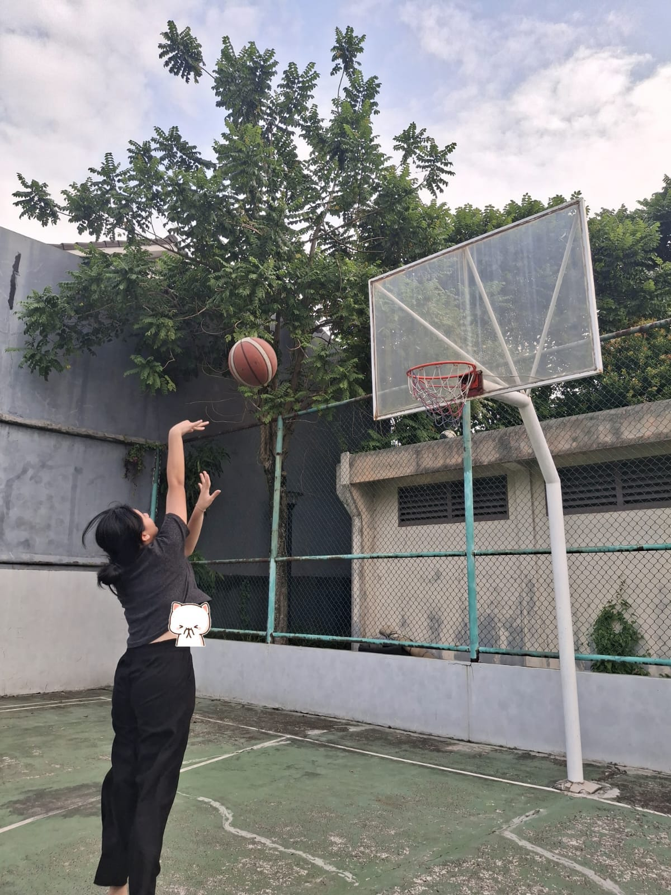
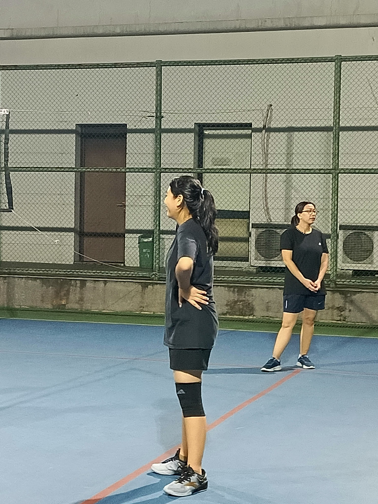
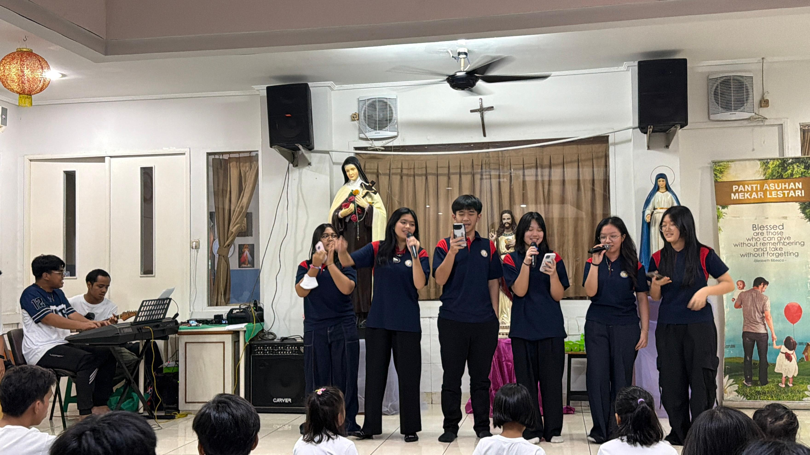
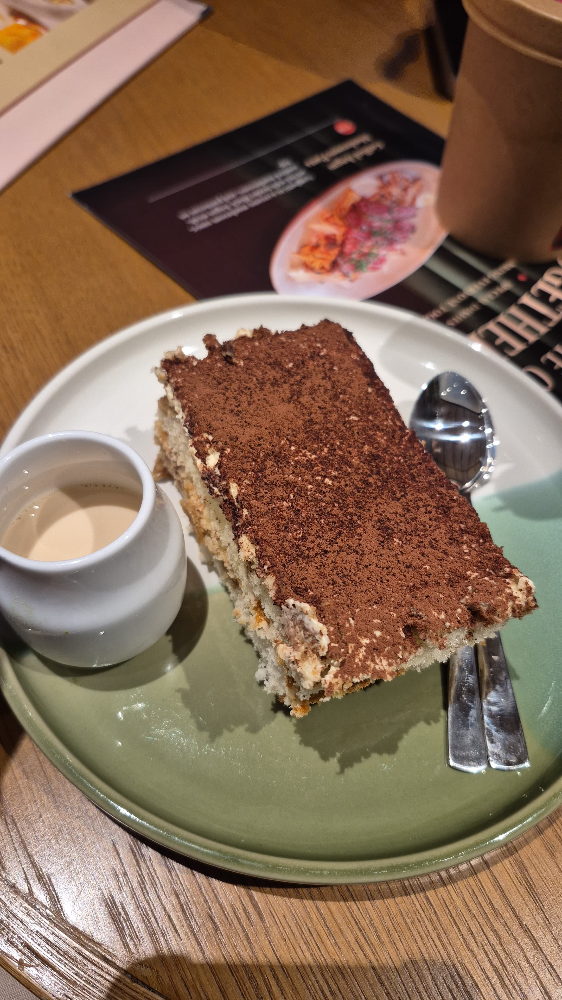
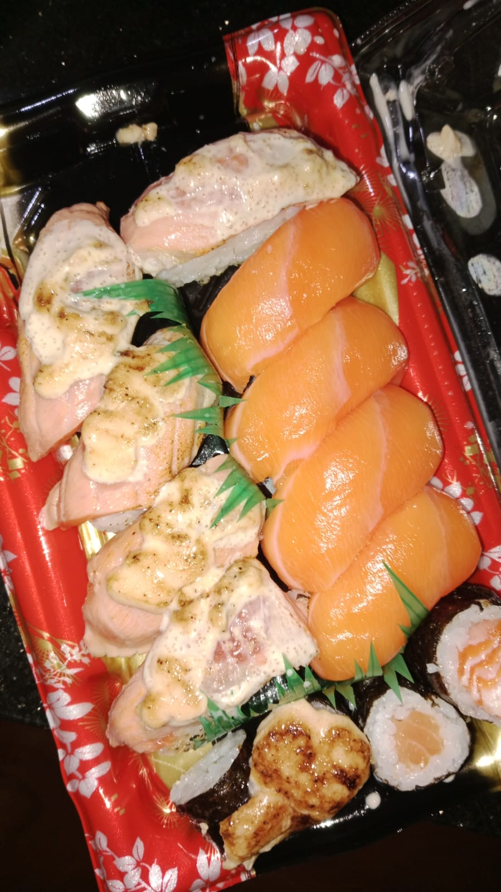
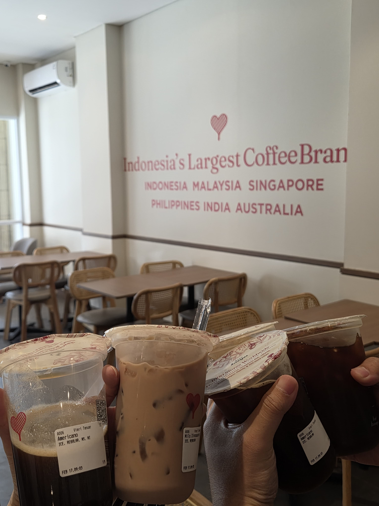

SMA Tujuan

Laurensia Suvarna Sutera
(klik logo)
Halo! Nama saya Kalyca Lucilia Wijaya. Saya adalah siswi kelas 9 di Santa Laurensia Suvarna Sutera.
Saya menyukai olahraga seperti voli, dan basket. Selain itu saya juga tertarik dengan musik yaitu bernyanyi, bernyanyi disini hanya kegiatan yang awalnya iseng dan ternyata pas penilaian dapet nilai yang lumayan.



Untuk sekarang, aku sedang relate dengan lagu "bukan orang nya". Lagu ini sedang relate dengan situasi ku sekarang karena harus bisa melepas dan mengiklhaskan orang.
Lagu "Bukan Orangnya" dari Juicy Luicy bermakna tentang keikhlasan menerima perpisahan dan melepaskan seseorang yang ternyata bukan jodoh atau pasangan yang tepat. Lagu ini menekankan bahwa kesedihan akibat perpisahan hanyalah sementara, dan tidak perlu berlarut-larut mencari alasan atas berakhirnya sebuah hubungan.
(klik logo)


